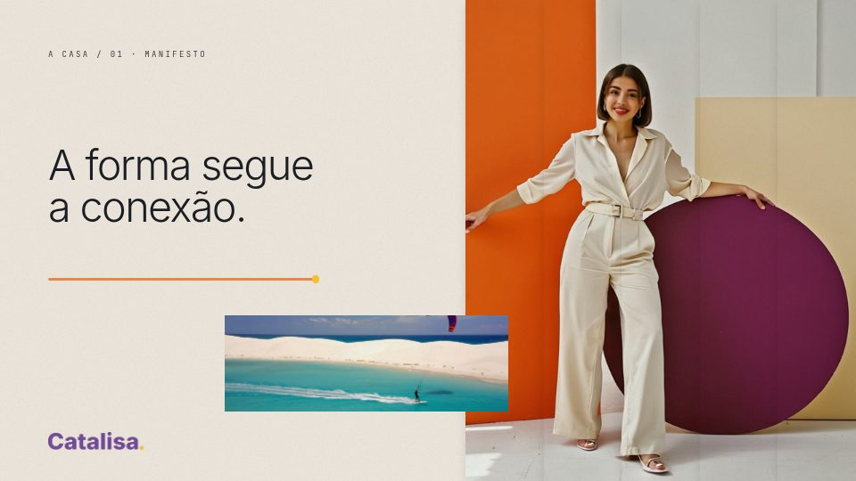

Normal
Sem geração pagaAguardando geração
O vídeo aparecerá aqui quando estiver pronto.O mesmo episódio em duas montagens: colagem com imagens existentes e colagem com a criadora animada pelo Gen-4.5. Roteiro, cenário, provas, trilha e fechamento permanecem iguais.
Aguardando geração
O vídeo aparecerá aqui quando estiver pronto.Aguardando geração
O vídeo aparecerá aqui quando estiver pronto.Consultando os filmes conferidos.
O comparativo acima preserva as duas montagens do teste original. A temporada atual segue nos seis capítulos, com os cinco lastros e as referências dos masters.
Não gerado · gasto: 0 créditos. A API recusou por saldo insuficiente; a tentativa posterior pelo site exigiu Upgrade.
Não gerado · gasto: 0 créditos. A API recusou por saldo insuficiente; não existe filme desta variante.
Resposta exata da API — HTTP 400: You do not have enough credits to run this task.
Os arquivos disponíveis são duas montagens em dois formatos. O comparativo original de quatro variantes continua incompleto. O pedido posterior de preservar créditos impede novas gerações pagas nesta etapa.
Assistir ao horizontal ↗ · Assistir ao vertical ↗
Assistir ao filme Pro horizontal ↗ · Ver apenas a animação de 5 segundos ↗
Assistir ao filme Pro vertical ↗
Direção, personagens e handover para o Grok ↗

Este quadro mostra a composição com a fotografia existente. Não é um novo resultado de geração de vídeo. Na versão Pro, esse recorte da criadora contém o clipe animado; os demais planos mantêm a mesma montagem.
Ver a composição vertical de referência ↗A Catalisa oferece capacidades para dar forma a essa construção. A prova mostra o ambiente de construção de referência; o fecho convida a começar pelo que diferencia a casa.
Pedido de movimento usado no Gen-4.5
O resultado Gen-4.5 usa cinco segundos de atuação na abertura da montagem de trinta segundos. As duas variantes Turbo não foram geradas. A imagem inicial já existia.
Rosto, mãos, roupa e proporções permanecem reconhecíveis?
O gesto é natural e corresponde ao mesmo pedido?
Círculo e painéis permanecem estáveis, sem deformações?
A diferença visível justifica o custo nos próximos episódios?